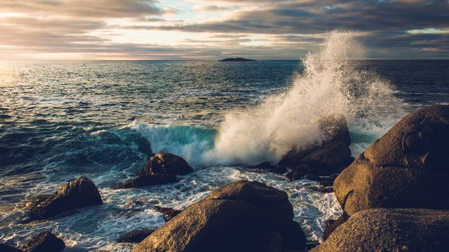

Você já se perguntou como imensas massas de água
se movem pelo oceano, influenciando a vida marinha e o clima global? As correntes marinhas
são verdadeiros mistérios em movimento, e estudá-las é como desvendar os segredos do mar. Ao
explorar as correntes marinhas, você será transportado para um mundo fascinante, onde
descobrirá como elas afetam desde as rotas de navegação até a distribuição de nutrientes no
oceano. Prepare-se para se maravilhar com a imensidão e a importância dessas correntezas
aquáticas, e embarque em uma jornada única de conhecimento e descoberta.
"As correntes marítimas são as estradas invisíveis do oceano, conduzindo águas e vida marinha em uma dança misteriosa que conecta os continentes e molda os ecossistemas marinhos."

O que são correntes marítimas?
As correntes marinhas são fluxos contínuos de água
que se movem pelo oceano, seguindo determinadas direções e padrões, possuindo características semelhantes de
temperatura e salinidade. Elas são formadas por
uma combinação de fatores, como a ação dos ventos, densidade, a influência das diferenças de
temperatura e salinidade da água, e a rotação da Terra. Esses elementos interagem e criam
movimentos na superfície e nas camadas mais profundas dos oceanos, impulsionando a
circulação das correntes.
Existem diferentes tipos de correntes marítimas, que podem se diferenciar em correntes
superficiais (quentes) e correntes profundas (frias). As correntes superficiais são aquelas que ocorrem na
camada superior do oceano, geralmente impulsionadas insolação e pelos ventos, além de influenciadas por
outros
fatores, como a forma das costas e a presença de ilhas. Já as correntes profundas são
formadas por diferenças na densidade da água, devido às variações de temperatura mais baixas e
salinidade, e ocorrem em regiões mais profundas do oceano.
Como se formam as correntes marítimas?
As correntes marinhas podem se formar de várias
maneiras, mas geralmente são influenciadas por fatores como a temperatura da água, a rotação
da Terra, os ventos (massas de ar) e as diferenças de densidade. Quando o Sol aquece a superfície da
Terra,
a água nos oceanos também é aquecida, criando áreas de diferentes temperaturas. Essas
diferenças de temperatura, juntamente com os ventos e a rotação da Terra, causam o movimento
da água e formam as correntes marinhas.
Além disso, o regime de marés também influência nessas
correntes: As marés são o resultado do movimento periódico de subida e descida das águas dos
oceanos, um efeito influenciado principalmente pela atração gravitacional da Lua, o satélite natural
da Terra, em conjunto com as rotações do nosso planeta. Esse movimento regular das marés tem um
impacto sobre os oceanos e as zonas costeiras, desencadeando uma série de efeitos, além da formação
de correntes oceânicas.
As correntes oceânicas costumam ser mais intensas em áreas próximas à costa. Nessas regiões, a
influência das marés é mais latente, resultando em correntes oceânicas mais fortes e rápidas. A
velocidade dessas correntes pode atingir valores impressionantes, superando até mesmo oito nós. Vale
destacar que um nó é uma unidade de velocidade equivalente a 1,85 quilômetros por hora.
Correntes quentes e frias: Corrente do Golfo e Corrente de Humboldt
Existem dois tipos principais de correntes marinhas: correntes quentes e correntes frias. As
correntes quentes se originam em regiões equatoriais do planeta, onde a insolação tende a ser mais elevada. Elas
levam água quente em direção às regiões
polares, sendo menos densas e, portanto, deslocando-se na camada superficial do oceano e de
maneira mais veloz que as correntes frias. Elas são responsáveis por levar calor dos trópicos
para outras partes do mundo, influenciando o clima e tornando as áreas costeiras mais amenas
devido a umidade que geram no processo de evapotranspiração. Um exemplo famoso de corrente
quente é a Corrente do Golfo, que flui do Golfo do México em direção ao norte do Atlântico,
levando calor para o oeste da Europa. Ainda, a Corrente do Golfo também é fundamental para a migração de várias
espécies marinhas, incluindo peixes e tartarugas, que aproveitam suas águas ricas em nutrientes. Também
desempenha um papel importante no transporte de calor e umidade para o norte, influenciando a formação de
tempestades e a circulação atmosférica na região.
As correntes frias, por sua vez, se formam em regiões polares e transportam água fria em
direção às regiões equatoriais, sendo mais densas e deslocando-se de maneira mais lenta em
subsuperfície. Essas correntes são fundamentais para a vida marinha, pois trazem nutrientes das
profundezas do oceano para a superfície, alimentando o fitoplâncton e toda a cadeia alimentar.
Um exemplo notável de corrente fria é a Corrente de Humboldt, que flui ao longo da costa oeste
da América do Sul, levando água fria do Oceano Pacífico para a região equatorial.
Essa corrente, que interfere principalmente a costa peruana, tem sua nomenclatura em homenagem ao naturalista
alemão Alexander von Humboldt, pois ele quem fez sua descoberta. Ela percorre vastas extensões do Oceano
Pacífico, se originando nas proximidades da Antártica. As temperaturas dessas águas são muito baixas, oscilando
entre 7º e 8º graus Celsius. A área ao largo das costas do Chile e do Peru são bastante influenciadas por esta
corrente, incidindo ativamente sobre a vida marinha da região, uma vez que ela leva ricos nutrientes como o
plâncton para lá. A grande quantidade de peixes que se concentram nas costas desses dois países movimenta a
economia pesqueira. Além disso, a corrente de Humboldt sofre aquecimento na costa peruana, e a partir desse
ponto, suas águas são impulsionadas para longe do litoral devido à ação dos ventos locais. Como resultado, águas
mais frias e profundas emergem até a superfície, trazendo consigo uma abundância de nutrientes que antes se
encontravam nas camadas mais profundas do oceano. Esse evento desempenha um papel crucial na manutenção do
ecossistema marinho da região, sustentando a produtividade e a diversidade da vida marinha naquele local. Essa
importante corrente também é responsável direta pela formação do deserto do Atacama, entre o Peru e o Chile,
isso se da pela baixa evaporação de suas águas frias.
Importância das correntes marítimas
As correntes marítimas são elementos essenciais, tendo impacto significativo em vários aspectos
da dinámica oceânica e climatológica mundial. Uma das principais influências das correntes marítimas se da sobre
a regulação do clima global. Elas desempenham um papel importante na transferência de calor ao redor do planeta,
transportando correntes quentes das regiões tropicais em direção aos polos e correntes frias das regiões polares
para as áreas tropicais. Esse processo ajuda a manter a temperatura do planeta em equilíbrio, influenciando os
padrões climáticos em diferentes regiões. As águas também provocam uma menor amplitude térmica nas regiões
costeiras pois tornam esses ambientes mais umidos, essa amplitude aumenta ao se adentrar mais o continente.
Além disso, as correntes marinhas são vitais para o transporte de nutrientes nos oceanos. Elas trazem nutrientes
das camadas mais profundas até a superfície, onde são utilizados por organismos fotossintéticos, como o
fitoplâncton por exemplo. O fitoplâncton é essencial para a cadeia alimentar marinha, sendo a base da produção
de oxigênio e da absorção de dióxido de carbono da atmosfera. Logo, as correntes marinhas têm um papel direto na
distribuição e no sustento da vida marinha.
As correntes marinhas também influenciam a distribuição e a migração de organismos marinhos. Elas são
responsáveis por transportar larvas, plâncton e outros organismos ao longo de grandes distâncias, permitindo a
dispersão de espécies e a colonização de novas áreas. Além disso, as correntes podem criar habitats únicos, como
recifes de corais, que sustentam uma grande diversidade de vida marinha.
No âmbito econômico, as correntes marinhas desempenham um papel relevante no que diz respeito a pesca comercial.
Elas transportam nutrientes que sustentam a produtividade pesqueira em determinadas regiões, tornando-as locais
mais favoráveis para a pesca. Ainda, as correntes influenciam a dispersão de ovos e larvas de peixes, afetando a
abundância e a distribuição das populações para pesca. Por outro lado, as correntes marinhas também podem ter efeitos negativos quando somadas ao descaso do homem com o meio ambiente, como no transporte de poluentes e
detritos. Embora possam ajudar a diluir e dispersar poluentes, elas também podem concentrar detritos e lixo
marinho em áreas conhecidas como "giros" devido ao movimento circular das correntes.
Os Oceanos e o Clima: El Niño e La Niña
El Niño e La Niña são fenômenos climáticos relacionados às variações nas temperaturas da superfície do mar
no Oceano Pacífico equatorial, que influênciam no regime dos ventos alísios. O El Niño é caracterizado pelo
aquecimento anormal das águas, ocorrendo em intervalos irregulares de 5 a 7 anos, com duração média de 1 a
1,5 anos. Esse fenômeno altera a circulação atmosférica global, impactando o clima em diversas regiões do
mundo. No Brasil, o El Niño causa secas prolongadas no Norte e Nordeste, enquanto o Sul enfrenta chuvas
intensas. Além disso, ele afeta a distribuição de umidade e temperatura em todo o planeta, causando secas na
Ásia, inundações na América do Norte e mudanças nos padrões de furacões no Atlântico.
Já o La Niña é o oposto do El Niño, envolvendo o resfriamento anormal das águas do Pacífico. Ele ocorre em
média a cada 2 a 7 anos e tem uma duração semelhante ao El Niño. O La Niña também influencia os padrões de
circulação atmosférica, resultando em consequências opostas às do El Niño. No Brasil, o La Niña pode causar
secas no Sul e chuvas intensas no Norte e Nordeste. Além disso, ele pode levar a temporadas de furacões mais
ativas no Atlântico e impactar as monções na Ásia.
Ambos os fenômenos têm impactos significativos na agricultura, pesca e clima em todo o mundo, sendo
monitorados de perto por agências meteorológicas e cientistas para prever e mitigar seus efeitos em todo o
mundo.
Principais correntes marinhas
Além das correntes quentes e frias mencionadas anteriormente, existem várias outras correntes
marinhas importantes ao redor do mundo:
Entre as correntes quentes destacam-se:
Corrente das Guianas, que flui ao longo da costa norte
da América do Sul, levando águas quentes em direção ao norte.
Corrente do Brasil, que
percorre a costa leste do continente, transportando águas quentes do Equador para o sul do
Brasil.
Correntes Norte e Sul Equatorial, caracterizadas por fluxos de água
quente no sentido leste a oeste ao longo do equador
Corrente do Japão, que leva águas
tropicais para o norte ao longo da costa leste do Japão.
Corrente das Monções, uma corrente
sazonal que ocorre no Oceano Índico durante o verão.
Corrente Norte Atlântica, que flui do Golfo do México para o nordeste do Oceano Atlântico
Corrente do Pacífico Norte, que leva águas quentes do Pacífico Equatorial para regiões mais altas.
Corrente Australiana, localizada ao largo da costa leste da Austrália, transportando águas tropicais
para o
sul.
Já entre as correntes frias temos:
Corrente das Falklands, que circula ao redor das Ilhas
Falklands (Malvinas) no Atlântico Sul
Corrente Antártica, a maior corrente marinha do mundo, que flui ao redor da Antártica de oeste para
leste, trazendo águas frias do sul para
outras regiões oceânicas.
Corrente do Atlântico Sul percorre a costa leste da América do Sul, levando águas frias da Antártica
para as regiões tropicais.
Corrente de Labrador, que flui ao longo da costa leste do Canadá
Corrente Oyashio, localizada ao largo da costa nordeste do Japão, transporta águas frias do
Oceano Ártico para o Pacífico Norte.
Correntes que afetam o brasil
O Brasil é um país que possui uma rica diversidade
de correntes marinhas que influenciam seu litoral e o clima regional. Uma das correntes mais
significativas é a Corrente do Brasil.
Essa corrente flui ao longo da costa leste do país, trazendo águas quentes do Equador em
direção ao sul do Brasil e provocando relativa umidade. Essa corrente tem um impacto importante na
temperatura da água e
no clima das regiões costeiras, contribuindo para a formação de ecossistemas diversos, como
os recifes de coral e as áreas de pesca.
Outra corrente relevante é a Corrente das Malvinas, que flui no sentido norte ao longo da
costa leste da Argentina e Uruguai. Essa corrente é responsável por transportar águas frias
do Oceano Austral em direção ao norte, tendo uma menor taxa de evaporação, influencia nas temperaturas das
águas costeiras no
sul do Brasil.
Além disso, o Brasil também é afetado pela Corrente do Atlântico Sul, que flui ao longo da
costa leste da América do Sul, trazendo águas frias da Antártica para as regiões tropicais.
Essa corrente tem um papel crucial na circulação oceânica global e no transporte de
nutrientes e organismos marinhos ao longo da costa brasileira.